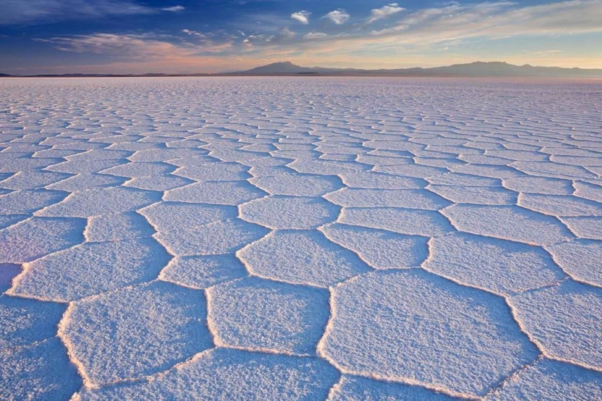

Quieres saber de donde se extrae el litio que has venido conociendo? Sientate que te lo cuento
El litio se encuentra en la naturaleza de muchas formas, pero solo unos pocos minerales lo contienen en cantidades comercialmente útiles. También se presenta en salmueras, aguas termales y agua de mar, aunque en concentraciones muy variables que oscilan entre 20 y 65 ppm (partes por millón).




explicacion imagenes y triangulo del litio
hola aqui va un espacio de texto para separar ambos movimientos en la pagina y no marearse
imagenes parallax scroll de las menas de litio


poner video de la forma en como se extrae, explicacion e imagenes.